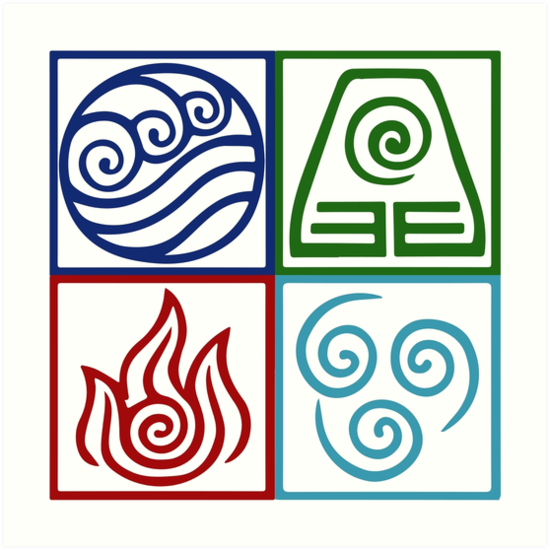
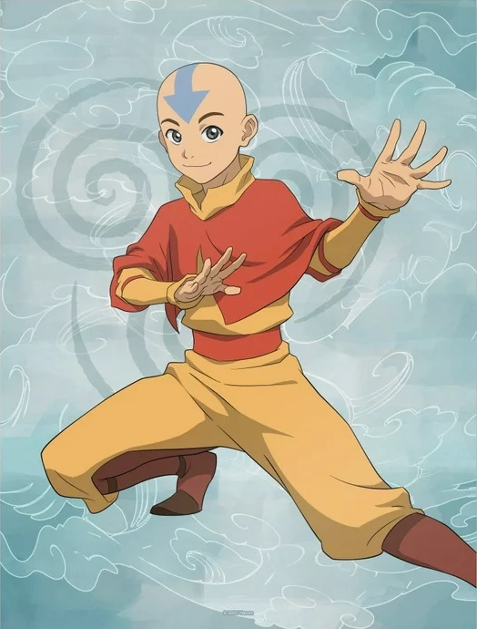
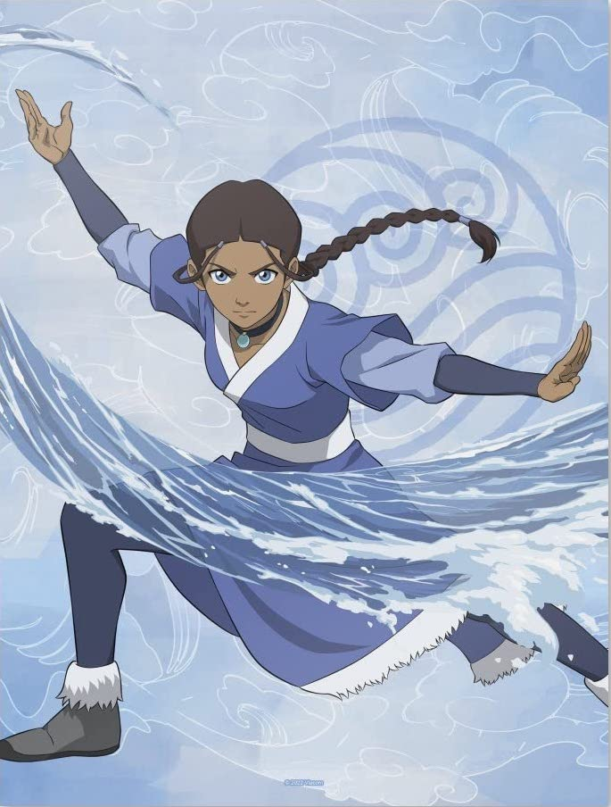
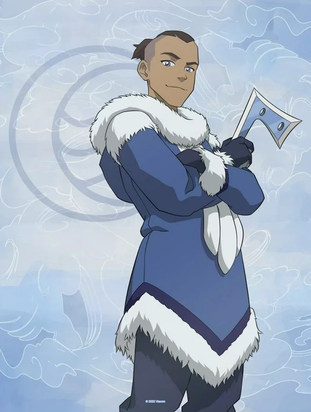
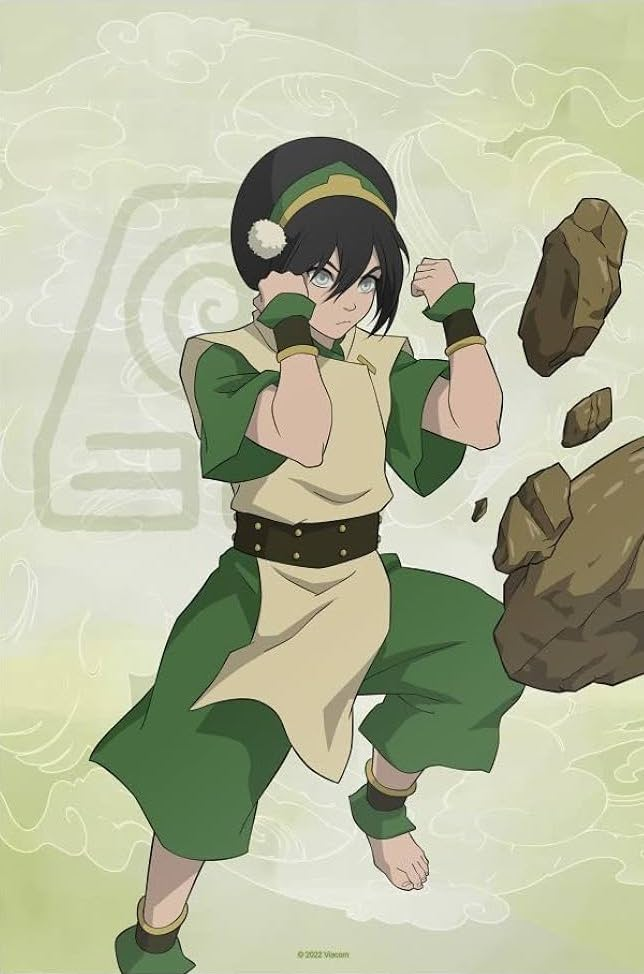
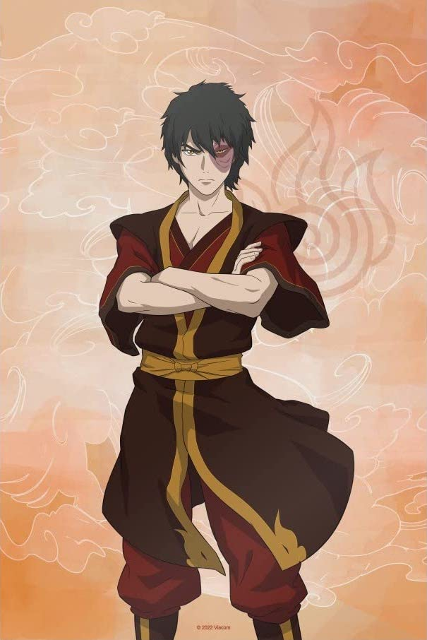

'Avatar: the Last Airbender' is an animated series set in a fictional world where some people known as 'benders' have the ability to telekinetically control one of four elements: water, earth, fire, or air. In this world, one individual, described as 'The Avatar', has the ability to control all four elements, and with it, the responsibility of maintaining harmony among the world's four nations. The series follows the story of a twelve year old air nomad named Aang, the Avatar, and last air bender remaining in a war-ridden world. Throughout the story, he meets many people, learns how to control the other three elements, and recruits a team that will help him save the world from being conquered by the Fire Nation and its evil emperor.
Team Avatar

Aang
- Main Character
- Avatar
- Originally an Air-Bender
- Southern Air Temple
- 112 years old (physically 12 years old)

Katara
- Aang's waterbending teacher
- Sokka's younger sister
- Water-Bender
- Southern Water Tribe
- 14 years old

Sokka
- Aang's friend
- Katara's older brother
- Non-Bender
- Southern Water Tribe
- 15 years old

Toph
- Aang's earthbending teacher
- Blind
- Earth-Bender
- Earth Kingdom
- 12 years old

Zuko
- Aang's firebending teacher
- Originally Aang's enemy
- Fire-Bender
- Crown Prince of the Fire Nation
- 16 years old